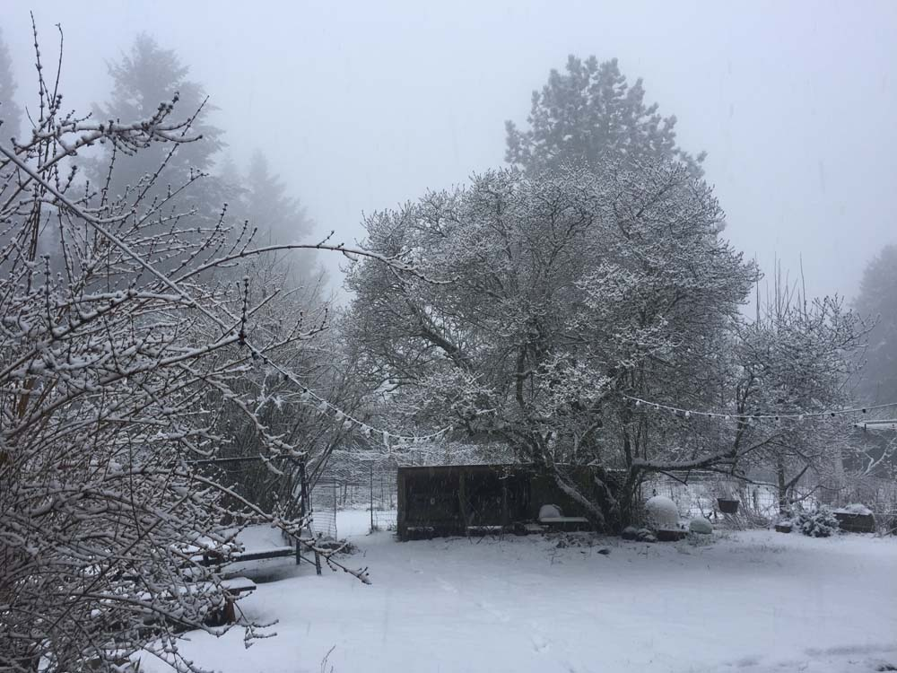

conduit is an artist-run art space inside a communal house in a residential neighborhood called Happy Valley in Portland, Oregon, facilitated by Jade Novarino → now → past → upcoming → about → penny press → residency  Web Design by Morgan Ritter. exhibition space residency stage collaborative practice experiment support system